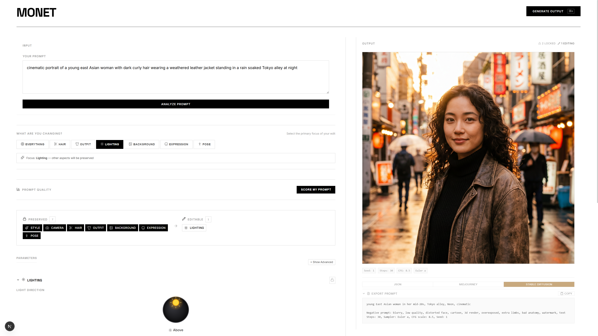

The Problem
Getting a first image is fast. Getting the right variant takes 10–40× longer because every change is a full re-roll. Edit the lighting? Lose the face. Swap the outfit? The background shifts. There's no concept of "lock what works."
There is a gap between writing raw Python scripts and typing a single text prompt. Monet lives in that in-between space, translating the logic and control of code into an intuitive, visual system that artists can understand and manipulate without technical complexity.

Starting Point
"i changed 'red shirt' to 'blue shirt' and it completely threw out the background composition i spent an hour trying to get. what's the point of locking the seed if the ai is just gonna ignore the whole layout over one word?"
— Alex, 26 · 3D Artist & Concept Designer
Seed locking — the go-to fix for consistency — only preserves the noise pattern, not the composition. What users actually want is semantic control: the ability to change one element (a shirt color) without the AI reinterpreting the entire scene around it.
"does anyone actually know how cfg scale works or are we all just faking it? i literally just smash random numbers between 5 and 15 until the image stops looking deep-fried."
— Sarah, 23 · Content Creator
Parameters like CFG Scale and Step Count control meaningful things — how literally the AI follows your prompt, how refined the output is — but they're exposed as raw numbers with no context. The interface should translate them into language creators already think in, like "Creative vs. Literal."
"getting this npc to look exactly the same in daylight versus a dark cave is a joke. i mask out everything to just change the lighting, and the inpainting still decides to give him a completely different nose."
— Dan, 29 · Indie Game Developer
Inpainting — masking out part of an image to regenerate it — often breaks the subject when the change involves lighting or environment. A better approach is to regenerate the full scene from the prompt while locking the character's identity, so the subject stays consistent across conditions.
The System
Monet doesn't replace your creative tools. It sits between your intent and the machine, translating what you mean into parameters the AI can respect.
Type a natural language prompt. Monet's AI reads it and dynamically extracts semantic parameter categories like subject, lighting, camera, and style, each with contextual controls.
Choose what to protect. Locking "Subject" means the face, pose, and identity are preserved no matter what else changes. Your intent, enforced.
Adjust only the unlocked parameters using semantic sliders. "Warm ↔ Cool" instead of "CFG 7.5." "Soft ↔ Hard" instead of a raw shadows value.
The output respects your locks. Change the lighting without losing the face. Swap the style without the composition collapsing. Iterate with confidence.
Key Interaction
When you select "Lighting" as your change intent, Monet doesn't just unlock the lighting sliders. It automatically locks everything else, Subject, Pose, Camera, Style, in a single cascade.
This is the novel interaction pattern. Instead of manually toggling five locks, you declare your intent once and the system infers the protection boundaries.
↕ "Warm ↔ Cool" replaces raw CFG 7.5.
The slider label is the documentation.
Universal Export
Monet's Polyglot Export translates your locked prompt structure into native syntax for three major platforms so you can move freely between tools without re-engineering your parameters.